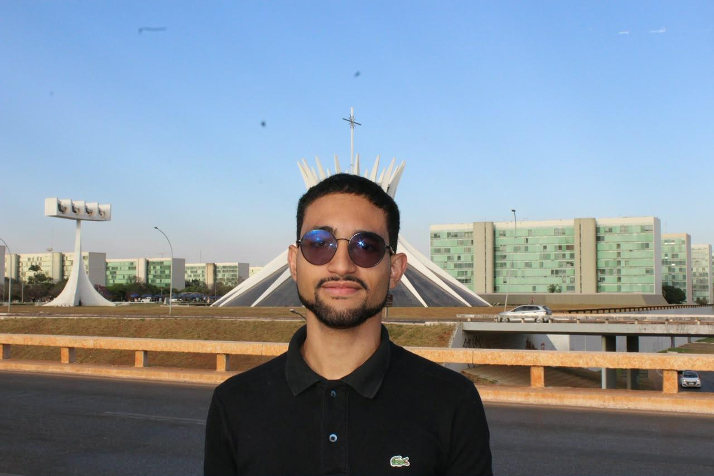
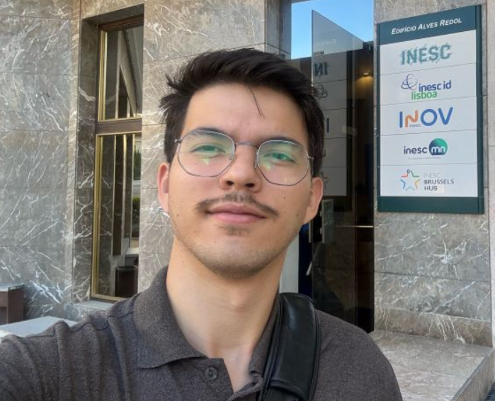

Um benchmark científico experimental conduzido pelo Centro Integrado de Inteligência Artificial
(CIIA / UnDF) para avaliar agentes autônomos de IA no setor público sobre processos administrativos
exportados do SEI sem conexão com o sistema real e com rastreabilidade rigorosa de página e
documento.
Do tratamento de exportações do SEI à orquestração dos agentes e avaliação com evidência documental auditada.
✦ COORDENAÇÃO GERAL · CIIA & BENCHMARK
Ricardo Sampaio
Coordenador Geral do Projeto e do CIIA
Supervisão científica, governança institucional e diretrizes estratégicas do estudo experimental entre
arquiteturas de agentes autônomos sobre o SEI.
Gerentes de Área & 6 Frentes Técnicas
EQUIPE 01CORPUS SEI
Data & RAG (Documentos)
Gerente da EquipeAndré VitalExtração, RAG & Conformidade LGPD
Trata exportações do SEI, segmenta textos em páginas e chunks rastreáveis com offsets determinísticos e
realiza a ingestão com integridade transacional na base de dados.
Gerente da EquipeRoger QuinelatoArquitetura de API, Contratos & Banco
Implementa os 6 endpoints REST consumidos via ToolClient, com validação Pydantic estrita, controle de
idempotência e isolamento por run_id.
FastAPI & PydanticToolClientIdempotência
EQUIPE 03LOOP REACT
Hermes

Gerente da EquipeGustavo AntônioArquitetura Hermes & Agente Autônomo
Desenvolve o adaptador do Hermes sobre a interface comum, operando em loop dinâmico de tool calling e
extração obrigatória de evidências documentais.
Hermes AdapterLoop DinâmicoCitação de Provas
EQUIPE 04STATE GRAPH
LangGraph

Gerente da EquipeJoão EnomotoOrquestração em Grafos & Estados
Modela o agente em nós e arestas de estado com fluxo de validação estruturado, tolerância a falhas de
ferramentas e controle de recursão.
LangGraph AdapterGrafo DirigidoControle de Estados
EQUIPE 05CONTAINERS
AI Infra
Gerente da EquipeJoão EnomotoDevOps, Containers & Infraestrutura
Provê isolamento por containers Docker, automação de CI/CD, rotinas de ambiente limpo entre rodadas e
orquestração do portal institucional.
Docker ComposeCI / AutomaçãoIsolamento Limpo
EQUIPE 06HARNESS & PAPER
Metodologia & Evaluation
Gerente da EquipeGustavo AntônioProtocolo Científico & Avaliação
Estrutura o protocolo científico, cataloga o conjunto de tarefas factuais, apura métricas de fundamentação
e redige a análise para o artigo acadêmico.
tasks.jsonrunner.pyArtigo Científico
2. O Problema & A Pergunta Científica
Isolando a Orquestração da Capacidade do Modelo
CIIA e UNDF · METODOLOGIA EXPERIMENTAL
ISOLAMENTO DE VARIÁVEIS
MICRO (Modelo LLM):
Capacidade intrínseca de raciocínio: Qwen 2.5, Llama 3.1, GPT-4o ou Claude 3.5.
Regra CIIA:
“Zero parecer sem citação de documento e página física.”
Orquestrador:
Loop ReAct dinâmico (Hermes) vs. Grafo de Estados (LangGraph).
CORPUS FIXO · 6 ENDPOINTS REST360 → 1.080 EXECUÇÕES
SETOR PÚBLICO & CONFIABILIDADE
QUANDO O AGENTE ERRA, DE QUEM É A CULPA?
Na administração pública, a IA não pode “alucinar” nem emitir pareceres sem fundamentação em páginas e
documentos reais do SEI.
A Dúvida Metodológica: Quando uma execução falha, a culpa é da LLM ou
da arquitetura de orquestração? Nosso desenho experimental separa essas duas dimensões
em duas fases estritas.
++++
DESENHO EXPERIMENTAL EM DUAS FASES
<FASE 1 · PRIORIDADE>
Comparação de Orquestradores (Hermes vs. LangGraph): Sob o mesmo modelo, mesmas
ferramentas REST e mesmo corpus documental, como o loop ReAct dinâmico do Hermes se compara ao grafo
determinístico de estados do LangGraph?
Métricas Primárias: Taxa de Sucesso com Fundamentação (citação de doc/página física),
Precisão no uso de Ferramentas (TUA), Latência e Passos.
<FASE 2 · SOBERANIA>
Modelos de Ponta vs. Modelos Locais (LGPD): É viável para governos locais (como o GDF)
rodar modelos abertos/locais (Qwen 2.5, Llama 3.1) em servidores próprios para proteger
processos?
Fronteira Comercial: Ou a perda de acurácia em relação a APIs comerciais de nuvem
(GPT-4o, Claude 3.5) ainda é proibitiva?
Escopo & Métrica: 360 execuções × 3 classes de modelos = 1.080
execuções avaliando Custo por Tarefa Concluída (CTCE) vs. degradação de
acurácia.
<AUDITORIA & RIGOR>
Sucesso Verificado ≠ Declarado: Não basta o agente afirmar que concluiu o parecer
administrativo.
Avaliador Cego: Um juiz independente (código determinístico ou humano cego) audita se a
evidência (página física e offset) realmente comprova a resposta.
Zero Conexão com SEI Real: Operação integralmente sobre exportações manuais com dados
tratados/sintéticos.
3. A Regra de Ouro
Paridade Experimental Estrita
01Mesmo Barramento (ToolClient)
Ambos os agentes (Hermes e LangGraph) usam rigorosamente a mesma interface (ToolClient) e os
mesmos 6 endpoints HTTP do Backend em FastAPI.
02Sem Roteiro Pré-Programado
Nenhum agente pode ter o caminho da resposta "hardcoded". Eles devem raciocinar autonomamente e
escolher quais ferramentas invocar a cada passo.
BARRAMENTO ÚNICOFERRAMENTAS PADRONIZADAS
03Sucesso Verificado ≠ Declarado
Um avaliador independente (código ou humano cego) audita se a evidência documental citada (página
física/offset do SEI) realmente comprova a resposta emitida.
04Isolamento por Sessão (UUID)
Toda execução recebe um ToolContext com run_id (UUID único), impedindo que o
histórico ou estado de uma pergunta contamine a seguinte.
LEITURA · DISPONÍVEL
consultar_processo
LEITURA · DISPONÍVEL
buscar_documentos
LEITURA · DISPONÍVEL
ler_documento
CONTRATO · HTTP 501
consultar_requisitos
ESCRITA · CONTRATO
registrar_pendencia
ESCRITA · CONTRATO
salvar_minuta
4. Telemetria & Execuções Controladas
Amostra de Execução do Harness (runner.py)
Estrutura dos registros de telemetria produzidos pelo harness determinístico. Auditoria cega de evidências com
validação de document_id, página física e offsets antes da consolidação de resultados.
Fase 1 · Orquestração
360 Execuções
60 tarefas × 2 agentes × 3 repetições pareadas sob o mesmo modelo.
Fase 2 · Soberania LGPD
1.080 Execuções
Modelos abertos locais (Qwen/Llama) vs. fronteira comercial em nuvem.
Isolamento de Sessão
UUID por Run
Cada chamada exige ToolContext isolado sem vazamento de estado.
Salvaguarda SEI
100% Air-Gapped
Zero conexão com o SEI real; corpus estático auditável com hash SHA-256.